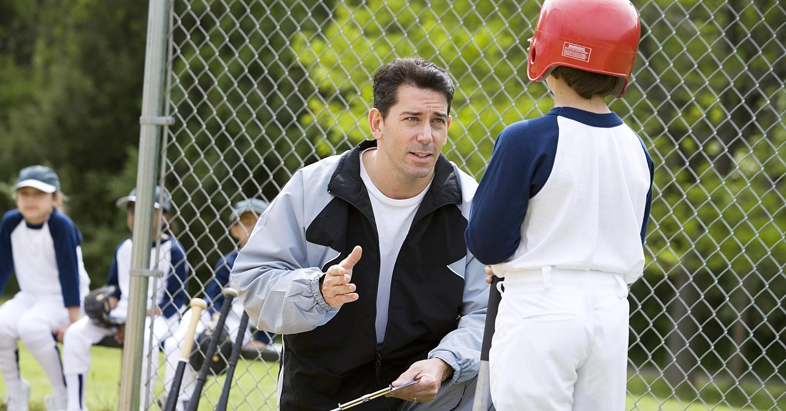

Frequently Asked Questions (FAQs)!
Time / Financial Requirements
- How much does this clinic cost?
- The clinic costs a total of $3000. You have the option to either pay all of the money up front, or use our payment plan. Our payment plan consists of two installments of $1500 each. This includes all training sessions, skill stations, workouts, and covers the entire season.
- When are the practices / how frequent are they?
- At this point, practices will be scheduled based on the availability of the players. Once the players have signed up, I will ask what their availability is, and from there a schedule will be decided.
- How long is the season?
- The average season will begin in the middle of May and end around the middle of September. The season has the potential to go longer if our team makes the playoffs as well.
- How long is the training season?
- Training seasons will be roughly 1.5 months each, and there will be two training seasons. The first training season will run from November until Christmas. The second training season will run from February until April.
Skills Sessions / Program Information
- I have a hard time fielding ground balls, do you have a program for that?
- The LBS Baseball Clinic offers a range of fielding drills to help strengthen your grounder game. Some of our drills include: short-hop drill, ball handling drill, ball-in-hand ground ball drill, and our infield warm up drill.
- My swing needs some work, what exercises do you have to help me?
- Improving your swing is one of the most common requests we get. Some of our exercises include: coil work, hip-rotation, plate discipline, count handling, and tee work.
- I'm a pitcher, what pitching programs do you offer?
- We incorporate plenty of gym workouts to bring out the best in our pitchers. Some of the more popular exercises include: pushups, basketball cuff dribbling, lunges, and jump roping.
Experience : Why You Should Choose This Clinic
- How much experience do you (the owner) have?
- With baseball, I have plenty of experience to share with my clients. Personally, I've played baseball for 15 years. Within those years I've played in American Legion Baseball and reached two state championships for that team. In terms of teaching experience, I've helped coach in the Elite Baseball League for the Triple Crown Kings team and also helped run baseball camps for my local high school's teams.
- Why should I choose this clinic?
- You should choose the LBS Baseball Clinic because there is no better clinic in the country designed to help hone your skills. The programs and skill sessions that we have designed are guaranteeed to help bring your game to the next level.
- How early can I sign up?
- Registration is on a first come, first serve basis. There is no official registration start time. If you're interested, send an email to brendanpounds@gmail.com to see if there is still room for you.

Return to top